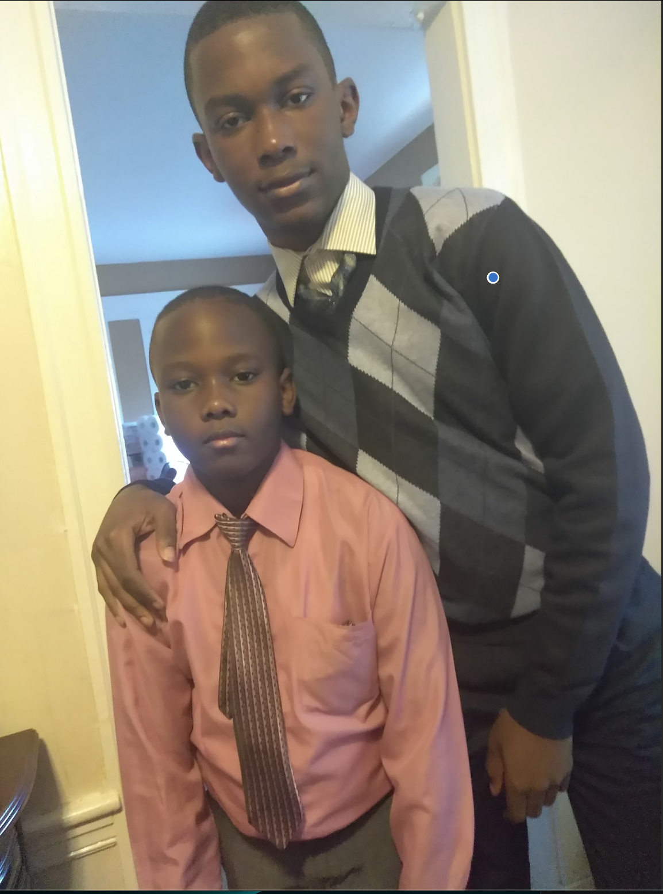
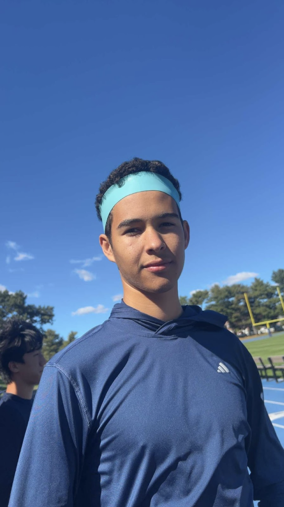
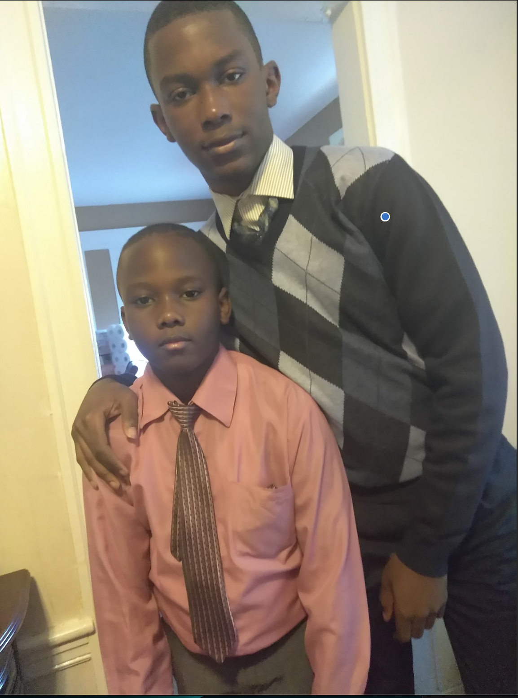
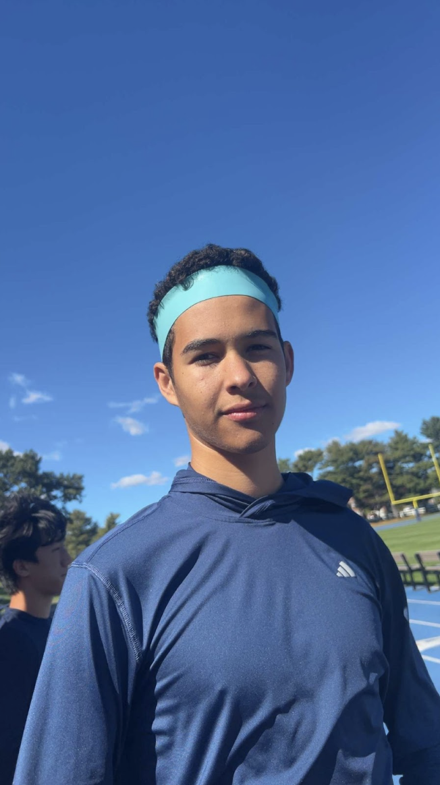

These are my friends from Wolcott House. Since freshman year, five people joined our class and they have all brought something special to the dorm. We have shared many great memories together, and I am grateful for each one of them.
This is my brother and I before going to church when we were younger. My mom would dress us nicely and make us take pictures. It was a special time for us to bond as siblings. He is someone that I can always go to if I need something.
To start off, Alexander asked me for this feature. He is the only other Wolcott senior in my CS class. I remember the first time I met him, he offered to help me bring my items upstairs during Transitions. I am grateful that I am able to call him my friend.
 


